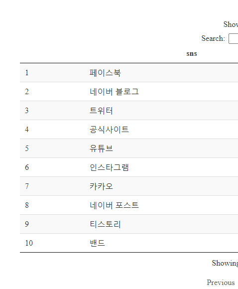
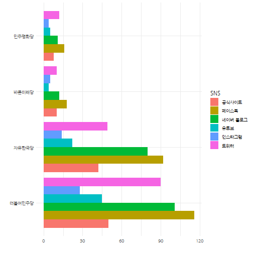
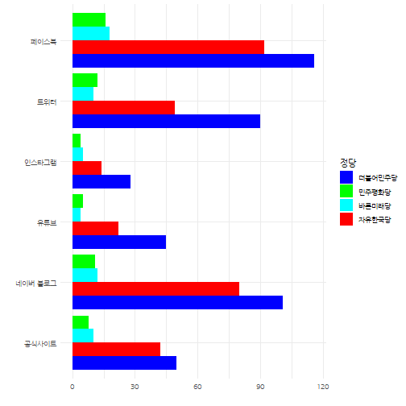
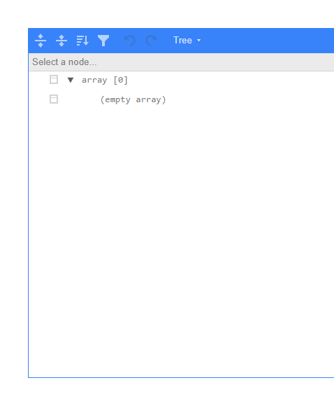

xwMOOC 데이터 제품
국회의원(20대) - 유튜브
작업흐름
데이터 긁어오기 1
제20대 국회의원 목록
가장 먼저 제20대 국회의원 목록이 필요하다. 이를 위해서 위키백과사전에서 대한민국 제20대 국회의원 목록 (지역구별)를 긁어오자.
위키백과사전에서 ULR을확인했으니 rvest 팩키지를 활용하여 xpath를 찾아 이를 서울특별시부터, 제주도까지 긁어온다.
# 0. 환경설정 -----
library(httr)
library(rvest)
library(tidyverse)
library(urltools)
library(glue)
library(extrafont)
loadfonts()
Sys.setlocale("LC_ALL", "C")
url <- "https://ko.wikipedia.org/wiki/대한민국_제20대_국회의원_목록_(지역구별)"
cm_list <- vector("list", length=19)
for(idx in 1:17) {
cm_list[[idx]] <- GET(url = url) %>%
read_html() %>%
html_node(xpath = glue('//*[@id="mw-content-text"]/div/table[', idx+2, ']')) %>%
html_table(fill=TRUE) %>%
as_tibble()
}
Sys.setlocale("LC_ALL", "Korean")
## 1.2. 시도별 국회의원 정보 -----
cm_list <- cm_list[1:17]
names(cm_list) <- c("서울특별시","부산광역시","대구광역시","인천광역시","광주광역시","대전광역시","울산광역시","세종특별자치시","경기도","강원도","충청북도","충청남도","전라북도","전라남도","경상북도","경상남도", "제주특별자치도")
## 2.3. 리스트 --> 데이터프레임 -----
name_v <- map(cm_list, "이름") %>% flatten %>% unlist %>% as.character()
precinct_v <- map(cm_list, "선거구") %>% flatten %>% unlist %>% as.character()
party_v <- map(cm_list, "소속정당") %>% flatten %>% unlist %>% as.character()
geo_v <- map(cm_list, "관할구역") %>% flatten %>% unlist %>% as.character()
num_v <- map(cm_list, "선수") %>% flatten %>% unlist %>% as.character()
cm_df <- data.frame(이름=name_v,
선거구=precinct_v,
정당=party_v,
지역=geo_v,
선수=num_v) %>%
separate(이름, into=c("한글명", "한자"), sep="\\(" ) %>%
filter(!is.na(한자))
DT::datatable(cm_df)
cm_df %>% write_rds("data/cm_df.rds")국회의원 사이트 정보
국회의원 명단이 준비되었다면 다음으로 사이트에서 유튜브 주소를 가져온다. 이를 위해서 국회의원 한명을 대상으로 사이트 정보를 제대로 가져오는지 준비한다.
# 1. 데이터: 네이버 인물정보 -----
## 1.1. 네이버 주소 -----
url <- "https://search.naver.com/search.naver?where=nexearch&sm=top_hty&fbm=1&ie=utf8&query="
people_name <- "김병욱"
naver_url <- glue({url}, {people_name})
## 1.2. 네이버 인물정보 긁어오기 -----
### 인물정보
key <- read_html(naver_url) %>%
html_node(xpath = '//*[@id="people_info_z"]/div[2]/div/dl') %>%
html_nodes('dt') %>%
html_text()
value <- read_html(naver_url) %>%
html_node(xpath = '//*[@id="people_info_z"]/div[2]/div/dl') %>%
html_nodes('dd') %>%
html_text() %>%
.[-1]
site <- read_html(naver_url) %>%
html_node(xpath = '//*[@id="people_info_z"]/div[2]/div/dl') %>%
html_nodes('dd') %>%
html_nodes("a") %>%
html_attr("href")
p_info_df <- tibble(key = key,
value = value) %>%
spread(key, value) %>%
mutate(`이름` = "김병욱") %>%
mutate(site = list(site))
DT::datatable(p_info_df)특정 국회의원 사이트를 받아오는 스크립트를 함수로 작성한다.
# 1. 네이버 인물정보 함수 -----
## 1.1. 이름
people_info <- function(people_name) {
## 1.1. 네이버 주소 -----
url <- "https://search.naver.com/search.naver?where=nexearch&sm=top_hty&fbm=1&ie=utf8&query="
naver_url <- glue({url}, {people_name})
## 1.2. 네이버 인물정보 긁어오기 -----
key <- read_html(naver_url) %>%
html_node(xpath = '//*[@id="people_info_z"]/div[2]/div/dl') %>%
html_nodes('dt') %>%
html_text()
value <- read_html(naver_url) %>%
html_node(xpath = '//*[@id="people_info_z"]/div[2]/div/dl') %>%
html_nodes('dd') %>%
html_text() %>%
.[-1]
site <- read_html(naver_url) %>%
html_node(xpath = '//*[@id="people_info_z"]/div[2]/div/dl') %>%
html_nodes('dd') %>%
html_nodes("a") %>%
html_attr("href")
p_info_df <- tibble(key = key,
value = value) %>%
spread(key, value) %>%
mutate(`이름` = people_name) %>%
mutate(site = list(site))
return(p_info_df)
}
## 1.2. 경합
people_url_info <- function(url, people_name) {
## 1.1. 네이버 주소 -----
naver_url <- glue(url, people_name)
## 1.2. 네이버 인물정보 긁어오기 -----
### 인물정보
key <- read_html(naver_url) %>%
html_node(xpath = '//*[@id="people_info_z"]/div[2]/div/dl') %>%
html_nodes('dt') %>%
html_text()
value <- read_html(naver_url) %>%
html_node(xpath = '//*[@id="people_info_z"]/div[2]/div/dl') %>%
html_nodes('dd') %>%
html_text() %>%
.[-1]
site <- read_html(naver_url) %>%
html_node(xpath = '//*[@id="people_info_z"]/div[2]/div/dl') %>%
html_nodes('dd') %>%
html_nodes("a") %>%
html_attr("href")
p_info_df <- tibble(key = key,
value = value) %>%
spread(key, value) %>%
mutate(`이름` = people_name) %>%
mutate(site = list(site))
return(p_info_df)
}
# 2. 네이버 인물 데이터 -----
people_info("김병욱")
people_url_info("https://search.naver.com/search.naver?where=nexearch&sm=tab_etc&mra=bjky&pkid=1&os=99291&query=", "진영")특정 국회의원 사이트를 받아오는 스크립트를 함수로 작성한 것을 활용하는 단계로 넘어간다. 앞서 입수한 국회의원 명단을 넣어 데이터를 긁어온다.
# 2. 국회의원 명단 -----
cm_name_v <- cm_df$한글명
# 3. 네이버 국회의원 정보 -----
np_list <- vector("list", length=length(cm_name_v))
for(i in 1:length(cm_name_v)) {
tryCatch({
np_list[[i]] <- people_info(cm_name_v[i])
# cat(i, ": ", cm_name_v[i], "\n")
}, error=function(e){})
}
names(np_list) <- cm_name_v
## 3.1. 네이버 국회의원 정보 보완 -----
### 결측값 국회의원
np_missing_v <- map_int(np_list, length)
np_missing_v <- np_missing_v[np_missing_v == 0]
np_missing_df <- tribble(
~"이름", ~"url",
"진영", "https://search.naver.com/search.naver?where=nexearch&sm=tab_etc&mra=bjky&pkid=1&os=99291&query=",
"김영호", "https://search.naver.com/search.naver?where=nexearch&sm=tab_etc&mra=bjky&pkid=1&os=145649&query=",
"김성태", "https://search.naver.com/search.naver?where=nexearch&sm=tab_etc&mra=bjky&pkid=1&os=154130&query=",
"이훈", "https://search.naver.com/search.naver?where=nexearch&sm=tab_etc&mra=bjky&pkid=1&os=285873&query=",
"최명길", "https://search.naver.com/search.naver?where=nexearch&sm=tab_etc&mra=bjky&pkid=1&os=96414&query=",
"김정훈", "https://search.naver.com/search.naver?where=nexearch&sm=tab_etc&mra=bjky&pkid=1&os=99295&query=",
"안상수", "https://search.naver.com/search.naver?where=nexearch&sm=tab_etc&mra=bjky&pkid=1&os=95772&query=",
"윤상현", "https://search.naver.com/search.naver?where=nexearch&sm=tab_etc&mra=bjky&pkid=1&os=140452&query=",
"김경진", "https://search.naver.com/search.naver?where=nexearch&sm=tab_etc&mra=bjky&pkid=1&os=152472&query=",
"최경환", "https://search.naver.com/search.naver?where=nexearch&sm=tab_etc&mra=bjky&pkid=1&os=99359&query=",
"이장우", "https://search.naver.com/search.naver?where=nexearch&sm=tab_etc&mra=bjky&pkid=1&os=125793&query=",
"이상민", "https://search.naver.com/search.naver?where=nexearch&sm=tab_etc&mra=bjky&pkid=1&os=99176&query=",
"김영진", "https://search.naver.com/search.naver?where=nexearch&sm=tab_etc&mra=bjky&pkid=1&os=311980&query=",
"김진표", "https://search.naver.com/search.naver?where=nexearch&sm=tab_etc&mra=bjky&pkid=1&os=97441&query=",
"김상희", "https://search.naver.com/search.naver?where=nexearch&sm=tab_etc&mra=bjky&pkid=1&os=151651&query=",
"김성원", "https://search.naver.com/search.naver?where=nexearch&sm=tab_etc&mra=bjky&pkid=1&os=314223&query=",
"김철민", "https://search.naver.com/search.naver?where=nexearch&sm=tab_etc&mra=bjky&pkid=1&os=178883&query=",
"조정식", "https://search.naver.com/search.naver?where=nexearch&sm=tab_etc&mra=bjky&pkid=1&os=99207&query=",
"김정우", "https://search.naver.com/search.naver?where=nexearch&sm=tab_etc&mra=bjky&pkid=1&os=3143802&query=",
"이현재", "https://search.naver.com/search.naver?where=nexearch&sm=tab_etc&mra=bjky&pkid=1&os=122137&query=",
"정성호", "https://search.naver.com/search.naver?where=nexearch&sm=tab_etc&mra=bjky&pkid=1&os=99194&query=",
"김종민", "https://search.naver.com/search.naver?where=nexearch&sm=tab_etc&mra=bjky&pkid=1&os=113207&query=",
"이정현", "https://search.naver.com/search.naver?where=nexearch&sm=tab_etc&mra=bjky&pkid=1&os=154105&query=",
"박준영", "https://search.naver.com/search.naver?where=nexearch&sm=tab_etc&mra=bjky&pkid=1&os=100016&query=",
"이철우", "https://search.naver.com/search.naver?where=nexearch&sm=tab_etc&mra=bjky&pkid=1&os=123634&query=",
"김재원", "https://search.naver.com/search.naver?where=nexearch&sm=tab_etc&mra=bjky&pkid=1&os=99363&query=",
"최경환", "https://search.naver.com/search.naver?where=nexearch&sm=tab_etc&mra=bjky&pkid=1&os=248894&query=",
"이주영", "https://search.naver.com/search.naver?where=nexearch&sm=tab_etc&mra=bjky&pkid=1&os=126184&query=",
"김재경", "https://search.naver.com/search.naver?where=nexearch&sm=tab_etc&mra=bjky&pkid=1&os=99387&query=",
"엄용수", "https://search.naver.com/search.naver?where=nexearch&sm=tab_etc&mra=bjky&pkid=1&os=125837&query="
)
### 결측값 국회의원 데이터 가져오기
np_missing_list <- vector("list", length=nrow(np_missing_df))
for(i in 1:nrow(np_missing_df)) {
tryCatch({
np_missing_list[[i]] <- people_url_info(as.character(np_missing_df[i,2]), as.character(np_missing_df[i,1]))
# cat(i, ": ", as.character(np_missing_df[i,1]), "\n")
}, error=function(e){})
}
names(np_missing_list) <- np_missing_df$이름
listviewer::jsonedit(np_missing_list)
## 3.2. 네이버 국회의원 결합 -----
np_comp_list <- append(np_list, np_missing_list)
np_comp_list <- plyr::compact(np_comp_list) # NULL 제거
listviewer::jsonedit(np_comp_list)
## 3.3. 네이버 국회의원 데이터 저장 -----
np_comp_list %>% write_rds("data/np_comp_list.rds")데이터 정제
긁어온 데이터를 SNS별로 정당별로 정제하여 데이터프레임으로 깔끔하게 정제해 둔다.
np_comp_dat <- tibble(
name = names(np_comp_list),
site = map(np_comp_list, "site"))
np_comp_dat <- np_comp_dat %>%
mutate(num_url = map_int(site, length)) %>%
filter(num_url > 0) %>%
unnest(site) %>%
unnest(site) %>%
filter(!str_detect(site, "^?where=|https://people.search.naver.com/"))
np_comp_df <- np_comp_dat %>%
mutate(sns = case_when(str_detect(site, "blog.naver.com/|^http://blog") ~ "네이버 블로그",
str_detect(site, "www.facebook.com") ~ "페이스북",
str_detect(site, "twitter.com") ~ "트위터",
str_detect(site, "youtube.com") ~ "유튜브",
str_detect(site, "instagram.com/") ~ "인스타그램",
str_detect(site, "m.post") ~ "네이버 포스트",
str_detect(site, "blog.daum.net") ~ "다음 블로그",
str_detect(site, "band.us") ~ "밴드",
str_detect(site, "cafe.daum.net") ~ "다음 카페",
str_detect(site, "cafe.naver") ~ "네이버 카페",
str_detect(site, "kakao") ~ "카카오",
str_detect(site, "tistory") ~ "티스토리",
TRUE ~ "공식사이트"))
np_comp_df <- left_join(np_comp_df, cm_df %>% select(한글명,정당), by=c("name" = "한글명")) %>%
mutate(current_party = str_extract(정당, "(국민의당|무소속|더불어민주당|바른미래당|민중당|자유한국당|민주평화당|대한애국당|정의당|새누리당)$"))SNS 분석
정당별 SNS 활용
국회의원이 선호하는 SNS
library(DT)
np_comp_df %>%
count(sns, sort=TRUE) %>%
mutate(pcnt = n/sum(n)) %>%
DT::datatable() %>%
DT::formatPercentage("pcnt", digits=1)
정당별 선호하는 SNS
np_comp_df %>%
filter(sns %in% c("공식사이트", "네이버 블로그", "유튜브", "인스타그램", "트위터", "페이스북")) %>%
filter(current_party %in% c("더불어민주당", "자유한국당", "바른미래당", "민주평화당")) %>%
count(sns, current_party, sort=TRUE) %>%
mutate(sns = factor(sns, levels = c("공식사이트", "페이스북", "네이버 블로그", "유튜브", "인스타그램", "트위터"))) %>%
mutate(current_party = factor(current_party, levels = c("더불어민주당", "자유한국당", "바른미래당", "민주평화당"))) %>%
ggplot(aes(x=current_party, y=n, fill=sns)) +
geom_col(position = "dodge") +
coord_flip() +
labs(x="", y="", fill="SNS") +
theme_minimal(base_family = "NanumGothic")
np_comp_df %>%
filter(sns %in% c("공식사이트", "네이버 블로그", "유튜브", "인스타그램", "트위터", "페이스북")) %>%
filter(current_party %in% c("더불어민주당", "자유한국당", "바른미래당", "민주평화당")) %>%
count(sns, current_party, sort=TRUE) %>%
mutate(current_party = factor(current_party, levels = c("더불어민주당", "자유한국당", "바른미래당", "민주평화당"))) %>%
ggplot(aes(x=sns, y=n, fill=current_party)) +
geom_col(position = "dodge") +
coord_flip() +
labs(x="", y="", fill="정당") +
theme_minimal(base_family = "NanumGothic") +
scale_fill_manual(values=c("더불어민주당"="blue", "민주평화당"="green", "바른미래당"="cyan", "자유한국당"="red"))
유튜브 트래픽 2
유튜브 채널ID 알아내기
np_comp_list <- read_rds("data/np_comp_list.rds")
np_comp_df <- read_rds("data/np_comp_df")
np_comp_yt_df <- np_comp_df %>%
filter(str_detect(site, "youtube")) %>%
select(name, site) %>%
mutate(channel = str_replace(site, "^(http|https)://www.youtube.com/", "")) %>%
mutate(channel_id = case_when(
str_detect(channel, "^(c/|user/)") ~ str_replace(channel, "c/|user/", ""),
str_detect(channel, "^channel/") ~ str_replace(channel, "channel/", ""),
TRUE ~ channel)) %>%
mutate(channel_len = str_length(channel_id))
user_v <- np_comp_yt_df %>%
filter(channel_len < 20) %>%
pull(channel_id)유튜브 ID를 채널로 바꾸기
library(RSelenium)
# 1. 데이터 ----
rem_driver <- rsDriver(browser="chrome", port=77L)
remdrv_client <- rem_driver[["client"]]
remdrv_client$navigate("http://johnnythetank.github.io/youtube-channel-name-converter/")
yt_web_element <- remdrv_client$findElement('class', 'form-control')
yt_web_element$clearElement()
yt_web_element$sendKeysToElement(list('maumgil88', key='enter'))
yt_channel_web_element <- remdrv_client$findElement('class', 'ng-binding')
yt_channel_web_element$getElementText() %>% unlist()다음 코드는 동작을 하지 않네요… ㅎㅎ
yt_web_element <- remdrv_client$findElement('class', 'form-control')
query_channel_id <- function(yt_name) {
tryCatch({
yt_web_element$clearElement()
yt_web_element$sendKeysToElement(list(yt_name, key='enter'))
yt_channel_web_element <- remdrv_client$findElement('class', 'ng-binding')
channel_id <- yt_channel_web_element$getElementText()
}, warning = function(yt_name) {
channel_id <- yt_name
}, error = function(yt_name) {
channel_id <- yt_name
})
return(channel_id)
}
query_channel_id('2haechan')library(tuber) # devtools::install_github("soodoku/tuber", build_vignettes = TRUE)Error in library(tuber): there is no package called 'tuber'yt_oauth(yt_app_id, yt_app_pw)Error in yt_oauth(yt_app_id, yt_app_pw): could not find function "yt_oauth"get_stats(video_id = "peLTHX-rBxM")Error in get_stats(video_id = "peLTHX-rBxM"): could not find function "get_stats"channel_id <- np_comp_yt_df %>%
filter(channel_len == 24) %>%
pull(channel_id)
yt_congress_stat <- list()
for(channel in channel_id) {
print(channel)
yt_congress_stat[[channel]] <- get_channel_stats(channel_id=channel)
}[1] "UCeKt3AtHLhkL1sSZrxpYi8Q"Error in get_channel_stats(channel_id = channel): could not find function "get_channel_stats"listviewer::jsonedit(yt_congress_stat)
yt_congress_stat_df <- tibble(
channel_id = channel_id,
view_count = map(yt_congress_stat, ~.$statistics$viewCount) %>% unlist %>% as.integer,
video_count = map(yt_congress_stat, ~.$statistics$videoCount) %>% unlist %>% as.integer,
subscriber_count = map(yt_congress_stat, ~.$statistics$subscriberCount) %>% unlist %>% as.integer,
comment_count = map(yt_congress_stat, ~.$statistics$commentCount) %>% unlist %>% as.integer
) Error: Tibble columns must have compatible sizes.
* Size 45: Existing data.
* Size 0: Column `view_count`.
i Only values of size one are recycled.np_comp_yt_df <- np_comp_yt_df %>%
filter(channel_len == 24) %>%
left_join(yt_congress_stat_df)Error in is.data.frame(y): object 'yt_congress_stat_df' not foundyt_congress_stat_df %>% ggplot(aes(x=view_count)) +
geom_density()Error in ggplot(., aes(x = view_count)): object 'yt_congress_stat_df' not foundyt_congress_stat_df %>%
arrange(-view_count)Error in arrange(., -view_count): object 'yt_congress_stat_df' not found